客廳 A
溫暖木質感

 真實屋況
真實屋況
每一張 AI 圖都可以和真實屋況直接拖曳比較。AI 僅示意可搬動家具與軟裝，不更動固定裝潢與空間比例。
溫暖木質感
簡約柔和
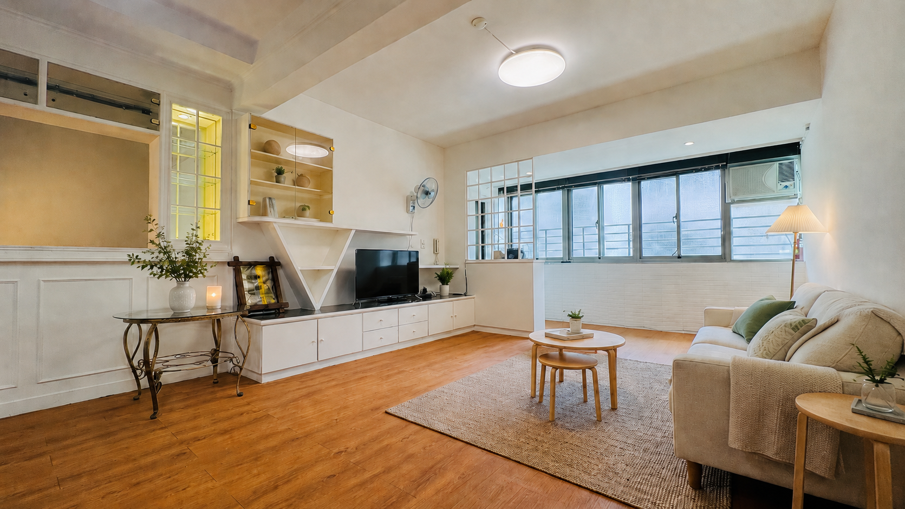
完整餐桌配置
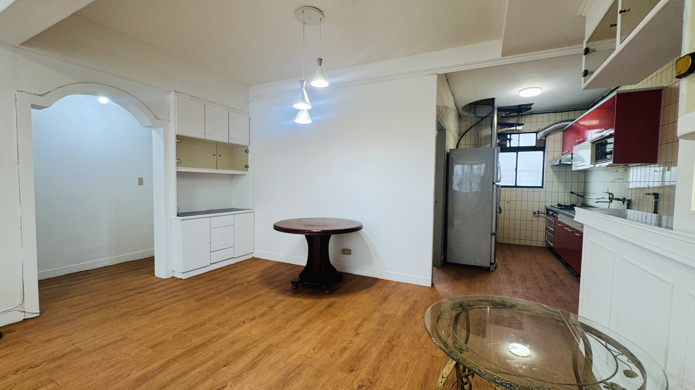
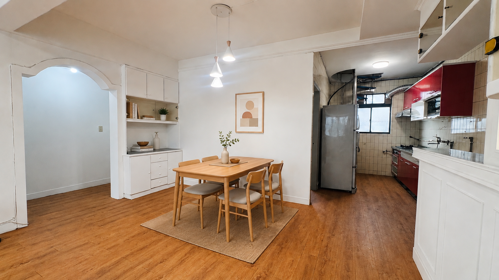
舒適臥室

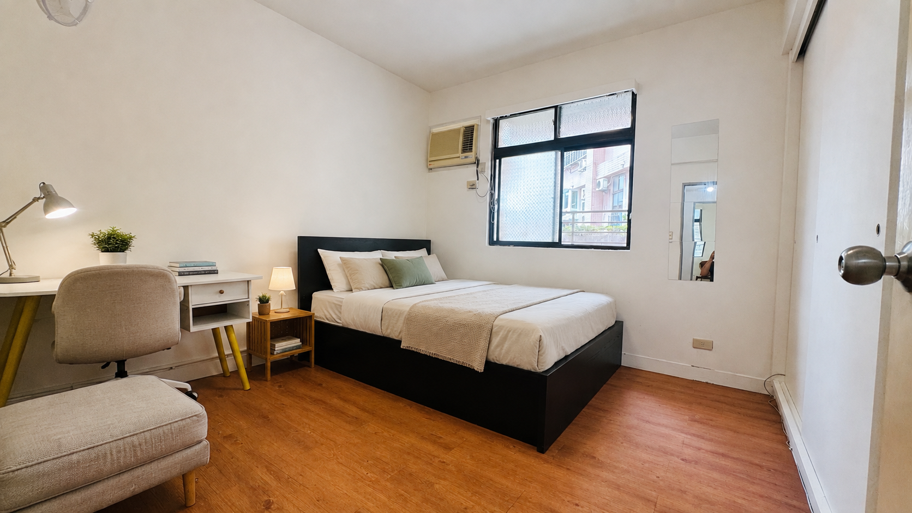
雙人配置
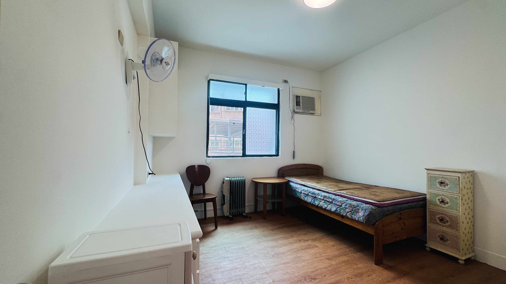
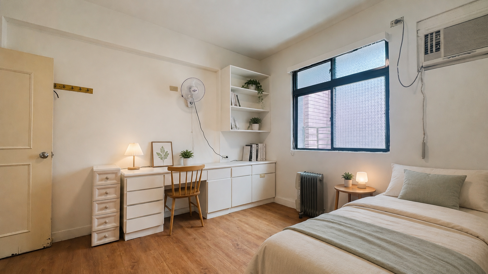
另一種住法
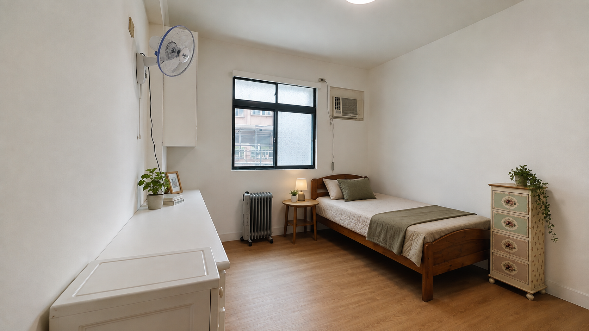
客房／第三臥室
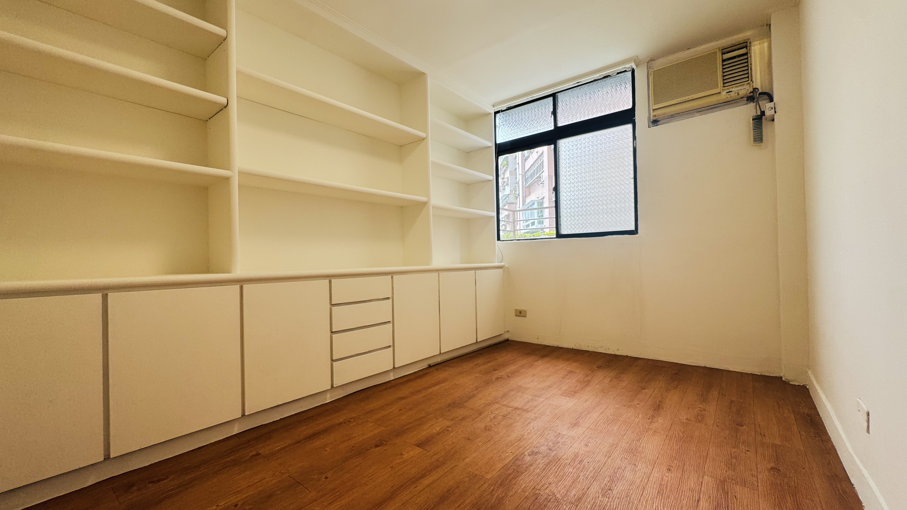
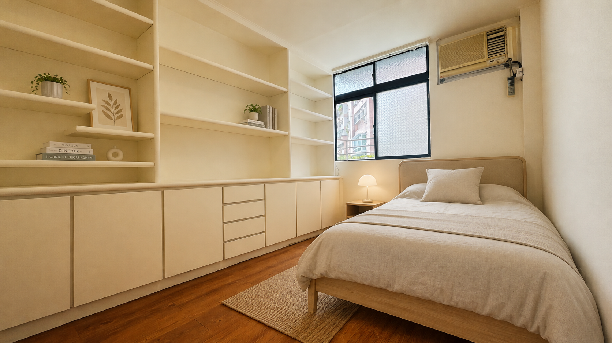
Montessori 想像
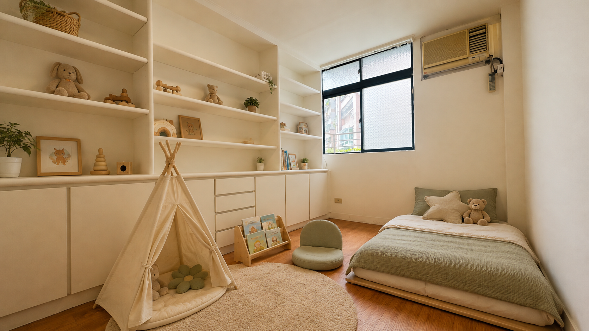
電腦工作空間
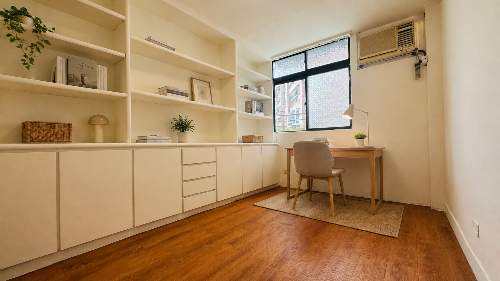
不只放最好看的三張。客廳、房間、廚房、浴室、走廊與窗景都保留，點照片可放大。
5樓無電梯。 如果每天爬樓梯是硬傷，這裡不適合。
南勢角站步行約15分鐘。 巷口有 YouBike，更適合騎車、YouBike 或在中和活動的人。
是老公寓，不是假裝新大樓。 有整理與設備升級，但仍保留原始屋況特色。
期待彼此好相處。 基本責任講清楚後，希望房東與住戶都保有自己的生活空間。
可以，會正式寫進租約。
可以，依法配合。
目前 5F 月租 NT$29,000，包含水費、天然瓦斯與既有網路；電費依分表與台電帳單計算。
沒有管理費，屋主自租，無仲介費。
有，全新 LG 洗衣＋熱泵乾衣設備。
5樓有完整廚房與天然瓦斯，可以正常開伙。
可移動家具可以在簽約前討論；固定櫃體與設備維持原狀。
不會。非緊急狀況會事先聯絡並約時間。
先確認基本條件彼此適合，再安排看房，大家都省時間。